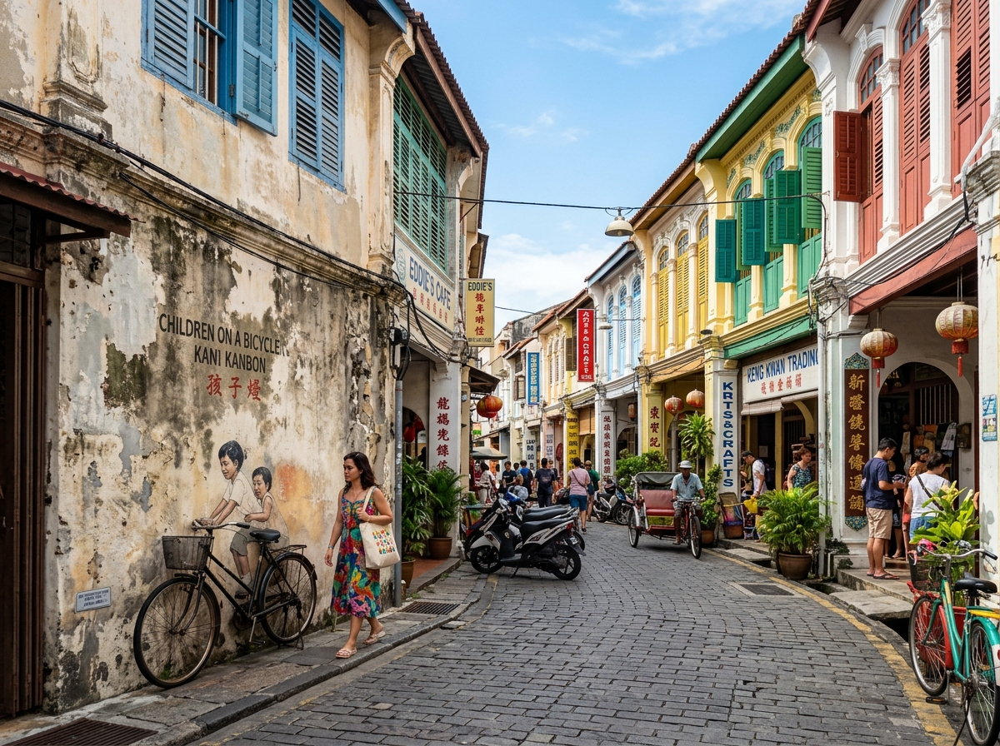

Often called the "Pearl of the Orient", Penang is an island-state steeped in culture and historical charm. The capital, George Town, was established by the British in 1786 and was inscribed as a UNESCO World Heritage Site in 2008.
Walking through George Town is like stepping back in time. You will walk past preserved colonial shophouses, traditional clan jetties projecting into the sea, ornate temples, and contemporary wall murals that bring the streets to life.
But Penang's ultimate claim to fame is its food. The island is world-famous for its delicious street food, blending Malay, Chinese, and Indian flavors into delicious masterpieces.
Penang is a food lover's paradise. Here are the top dishes you must try during your holiday.
| Dish Name | Description | Average Cost | Famous Spot to Try |
|---|---|---|---|
| Char Kway Teow | Flat rice noodles stir-fried in a hot wok with prawns, cockles, bean sprouts, chives, eggs, and soy sauce. | RM 8.50 - RM 12.00 | Siam Road Charcoal Char Kway Teow |
| Penang Assam Laksa | A spicy, tangy fish-based noodle soup seasoned with tamarind, lemongrass, and topped with shredded mackerel and pineapples. | RM 7.00 - RM 10.00 | Air Itam Market Assam Laksa (near Kek Lok Si) |
| Nasi Kandar | Steamed rice served with a variety of rich curries (chicken, beef, mutton, seafood) and side dishes. | RM 12.00 - RM 25.00 | Line Clear Nasi Kandar or Hameediyah Restaurant |
| Cendol | Shaved ice dessert with green rice flour jelly droplets, coconut milk, red beans, and palm sugar syrup (Gula Melaka). | RM 4.00 - RM 6.00 | Penang Road Famous Teochew Chendul |